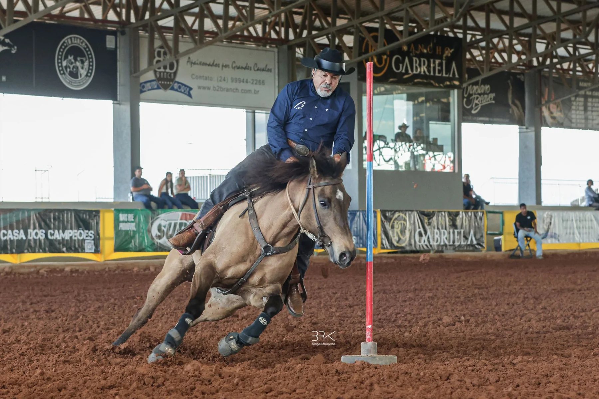

Pole bending in Brazil: how Seis Balizas works
Agility, control and explosive speed in a technical event, run in a weaving pattern between six poles.

What it is
In pole bending, horse and rider run to the far end of a line of six poles, weave back through them, repeat the pattern in the opposite direction and sprint to the finish. The fastest time wins, and knocking down poles is penalized according to the rulebook.
What it demands
It is a technical event. It demands agility, control, precision and explosive speed, and consistency and responsiveness are decisive.
Pole bending at B2B Ranch
B2B Oprah Rolls, ridden by founder Odilon Diniz, is a winner in both disciplines, and B2B Apollo Rolls also competes in pole bending. See the times on each athlete's page.